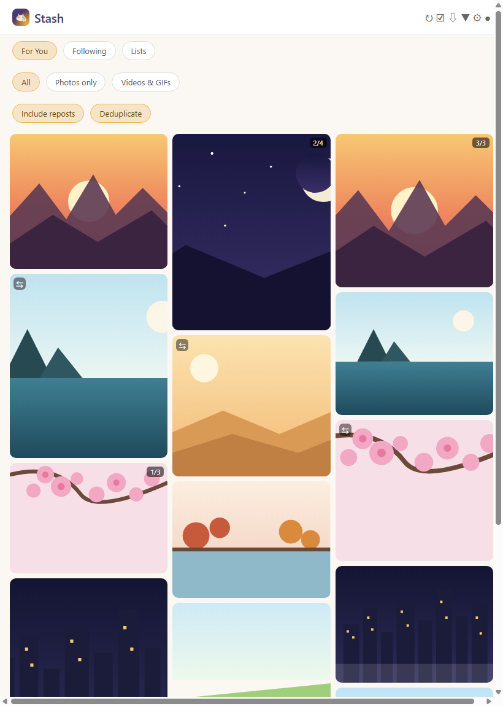
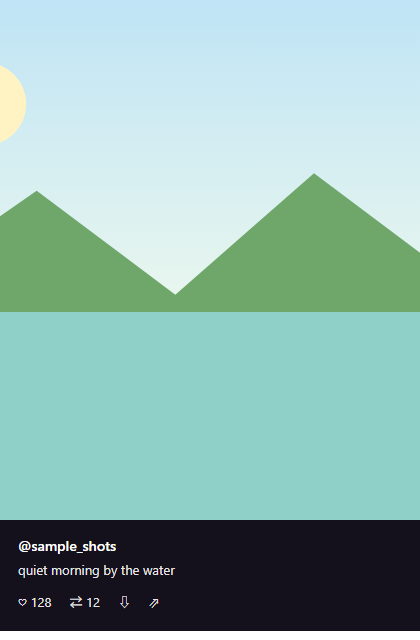

写真・動画を、簡単に貯められる。
X(Twitter)のタイムラインから、写真・動画だけを効率よく閲覧・保存できるビューワーアプリ。 おすすめ・フォロー中・リストを横断し、見たい投稿だけをすっきり並べます。
Android向け。非公式アプリ・サイドロード配布です。詳しくは下記「配布について」をご確認ください。

公式ストアではなく、サイドロード配布のみで提供します。
写真・動画をグリッドで一覧し、タップで詳細を確認できます。(画面はサンプルデータです)

見たい投稿だけを、見やすく・探しやすく。
3つのタイムラインを切り替えて、写真・動画の投稿だけを横断してチェック。
「写真のみ」「動画・GIFのみ」で表示を切り替え。目的のメディアだけをすぐ探せます。
リポストを含めるかどうか、同じ投稿の重複を除くかどうかをワンタップで切り替え。
一覧の列数を増減して、一覧性と見やすさの好みに合わせられます。
気に入った写真・動画をその場で端末に保存、または他アプリへ共有。
1投稿に複数枚の画像がある場合は枚数表示付きでまとめて確認できます。
ログイン情報は、あなたの端末の外に出ません。